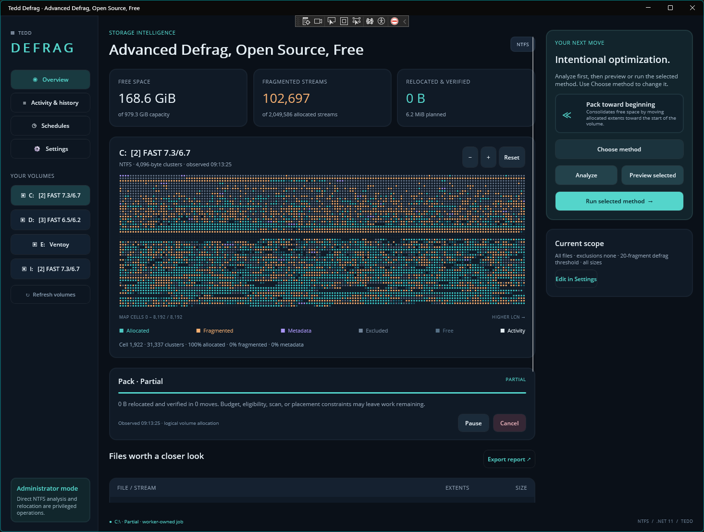

01
Choose a drive
See every available volume and its capacity at a glance. Unsupported volumes stay unavailable for disk operations.
Free, open-source Windows storage optimizer
Choose from multiple defragmentation methods, targeted NTFS compression, SSD-aware maintenance, and practical resource controls—all in a free, open-source Windows app and CLI.

$0Free and GPL-3.0
x64 + ARM64Native Windows builds
Desktop + CLIInteractive or scriptable
NTFS · ReFS · FATVolume analysis support
One workspace, several operations
Analyze the volume, select a method appropriate to its filesystem and media, then adjust scope and operating limits when required.
See every available volume and its capacity at a glance. Unsupported volumes stay unavailable for disk operations.
Distinguish allocated, fragmented, metadata, excluded, free, and active regions. Zoom and inspect individual cells.
Choose a method, inspect the current scope, analyze, preview, and run from a deliberately ordered control panel.
Simple by default
The ordinary workflow is intentionally linear. Advanced controls remain available when you need them, without obstructing the basic task.
Read the NTFS allocation bitmap and file records. This is a read-only operation; no file data is moved.
Evaluate the selected method against the current scope, exclusions, file filters, time limit, and write budget without executing relocation.
Explicitly authorize the operation. Tedd.Defrag rechecks each candidate before a filesystem-controlled move.
More than one defrag mode
Start conservatively, then move to specialized placement only when the workload requires it. Every method remains subject to exclusions and eligibility checks.
Recommended start
Preserve the first extent where possible and relocate only a fragmented tail. Reduce unnecessary movement while making heavily fragmented files contiguous.
Target eligible fragmented files without reorganizing the entire volume.
Consolidate occupied space to create a larger contiguous free region.
Prefer placement by path, directory, size, extension, or timestamps.
Move eligible extents below an explicit partition boundary before resizing.
Resend deallocation hints on supported SSDs without relocating file data.
NTFS compression, explicitly scoped
Target an individual file, a recursive folder, wildcard, glob, or regular expression. Compression runs before the MFT scan so the allocation map and optimization plan reflect the resulting file sizes.
NTFS only. Compression targets are unavailable on ReFS, FAT, and other filesystems.
WaitingFiles and input bytes
ProcessedFiles and input bytes
ResultChanged · skipped · failed
Storage changeBytes and percentage saved
Try all is evaluated only for an uncompressed file. Already-compressed files are left unchanged.
Your machine. Your limits.
SSD guidance without folklore
On an SSD with TRIM support, Tedd.Defrag defaults to ReTRIM, which resends deallocation hints without moving file data. Windows automatic delegates to the operating system’s media-aware policy.
Custom relocation on SSD or unknown media requires an explicit opt-in. That separation prevents a traditional HDD strategy from being presented as universal advice.
Everything included
No subscription. No license key. No paid feature tier.
All formats are self-contained and include the desktop app, CLI, and isolated worker. Installers add a Start menu entry and an Installed apps uninstaller. Portable ZIPs require no installation. Release builds check GitHub for updates and verify SHA-256 checksums before applying them. Packages are currently unsigned.
Read before use
Tedd.Defrag is an engineering preview. Read-only native analysis has been exercised on a real system volume. Native NTFS relocation is implemented but has not yet completed the validation campaign required for production use.
Do not use custom relocation on irreplaceable data or a production system. Begin with analysis and preview, keep current backups, and use a disposable volume for experimental write operations.
Review validation status and limitations ↗Storage maintenance for Windows
Open source, portable, and available as a desktop app or scriptable CLI.